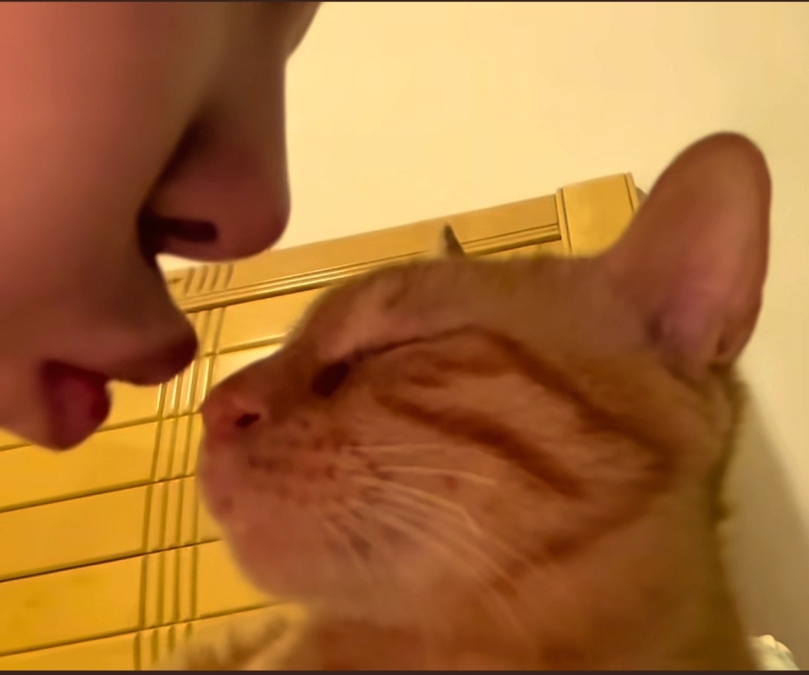

我起早贪黑的刷他，他起早贪黑的学习[泪奔]
NO，现在还是24岁[泣不成声]，离25岁还有38天[泣不成声]
在你们看不见的角落别人一直在学习，即使是在机场路过一家店也会停下来，进去看会书，买书回去看，乖乖的，一个人安静的在那里坐着看书（当时还没那么多追私和代拍[流泪]，他可以静静的过正常人生活）
真的，我都不敢跟我妈炫耀他[捂脸]
老天给他关的唯一一扇窗就是，海鲜过敏[九转大肠][九转大肠]
“最终能引导舆论的是我自己”含金量具像化
楚钦老师，耳机绝对不是听音乐，绝对是知识点[泪奔]
妈妈这么漂亮[比心]为啥生的一儿子像他老公的弟弟呢[呲牙][呲牙][呲牙][呲牙]
你们发现没有，不管谁抱宝宝，妈妈都会频繁拍照记录，可是妈妈抱着宝宝的时候，没有一个想着拍照记录一下宝宝和妈妈[流泪][流泪][流泪]
在我心里延禧攻略和甄嬛传一样的地位
延禧攻略节奏快事件多[愉快]看得我爽爆了
“令妃？这个称呼还不算太顺耳，来日，叫令贵妃，令皇贵妃，本宫要一步一步的往上走”
延禧攻略到底好不好看啊，我看了甄嬛传感觉已经是顶峰了
不容本宫放肆也放肆多回了！
天呐，延禧攻略终于有人说了，真的特别好看（特爽）
啊啊啊加上延禧攻略太后在马车里说 :你说呢？呵呵笑那个画面就更牛逼了[舔屏]
妃就是妃贵妃就是贵妃 只差一字 便要低人一等 低人一等呢就要俯首帖耳不得违逆
二十年了，这个至今还在我脑海里
我老公说我在家武则天，武断且不能违背，在外鹌鹑蛋，窝窝囊囊[尬笑]
给这个世界说晚安吧，老弟

姐姐：本来做题就烦，还碰到个不长眼的，苏醒吧，猎杀时刻
猫：你都听到了
就这样 安静地 炸毛了[发呆]
猫：你从哪句开始听的
它在叫啥 给我家猫都喊过来了[宕机]
像是一个人在家乱唱然后发现家里有人的尴尬
它甚至还不可置信的眨了一下眼
猫咪找人呢！[捂脸]找不到就会大声叫了，而且很着急，是吧？[捂脸]
尴尬，怎么有人[尬笑]

最揪心的是 真实事件改编
强奸犯就该死，该千刀万剐，受害者是为民除害，不该受到惩罚
[流泪]什么叫孩子是无辜的，被强奸的女性不无辜吗，要是生下来，每次看到孩子的脸，就又要想起那段被侵害的过去，她这样怎么可能爱上孩子，这对孩子也是不好的，不如不生[流泪]那时候的韩国法律真的太忽视女性群体了
这就是为什么nba 的水平，最后关键时刻要靠巨星解决问题，战术不可能总是完美执行
这才是应该有的篮球主播
这战术画的真好，一般NBA教练也画不出来吧，太完美了，尤其是给凯尔特人湖人这种又高又有三分的队
分析的很好，很多人看不起现在的NBA，属于不懂球，如今NBA的战术更复杂多变，所谓的没防守，是因为根本没时间和空间给你去肉搏，稍不留神就被人甩开大空位，很多在NCAA爆炸的球员进了NBA就只能看饮水机，就是因为跑不明白战术，球商不够
欧阳娜娜终于回到舒适区了，这种台湾小情歌就是要甜妹来唱啊！
它貌似还想开个舌吻
它还知道闭眼睛[泪奔][泪奔] 
猫：女人，你是在搞欲擒故纵吗
他好像爱上你了
死鬼，人家闭上眼睛就是要你跟它舌吻的嘛。。。
粤夹普夹韩夹英 好小众的赛道啊[捂脸]
粤夹韩第一次听[憨笑]
粵語和廣東話是很像的喔
姐姐好懂事，告诉弟弟生孩子要问妻子的意见，从小就懂得尊重伴侣[赞][赞]
姐姐说话让人很震撼 生不生孩子是女生应该考虑的事
姐姐说的太对了！生不生小孩是女生自己说了算！！
听过粤语带国语 粤语带英文，粤语带泡菜我第一次见！！！一时无反应过来
哈哈哈韩国甘细个就教人咪结婚生仔[笑哭] 怪不得出生率低[泪奔]
[大笑][大笑]来自姐姐噶灵魂拷问 有无女仔愿意同你生
姐姐以后也是个博主了[玫瑰]可以给她后面开个账号
弟弟的想法有一点点不对，照顾小孩，做家务不是女人的专利，男人也应该要做，因为孩子家务都是大家的。应该要告诉他这些
姐姐思维好清晰啊！哈哈哈哈
姐姐跟弟弟讲话的语气和妈妈好像[看]
大哥这行为比去拜多少佛都积德！[赞][赞][赞]
[憨笑]哈哈 我说那天在他家客厅放这首歌他怎么突然这么激动[黑脸]劳资听不懂英文却忘了他在美国留学[憨笑]。。
老子听了这么久的小众。深情歌。[愉快]
旋律是真喜欢 歌词翻译是真不敢看[愉快]
因为这一段特意去搜了这首歌 结果发现女声只有这一段[流泪]
英语歌好多歌词都好皇[捂脸]
不是 你让我怎么面对这个歌[泪奔]
本来挺喜欢的 看了歌词翻译 更喜欢了
据说，是据说哈，考古的，动手前也是要烧香的
你别说坐的是张艺兴的车
我马上救你出来张艺兴
不是 你这是吃了多少张艺兴，声音这么像
张艺兴听到都会迟疑一下
Read more: